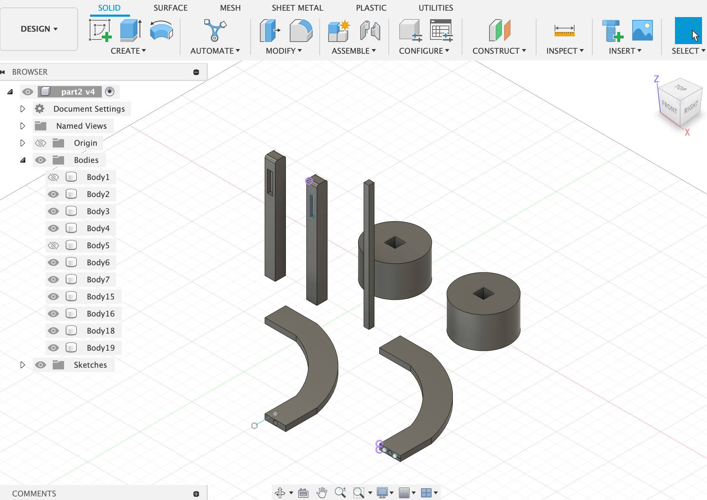
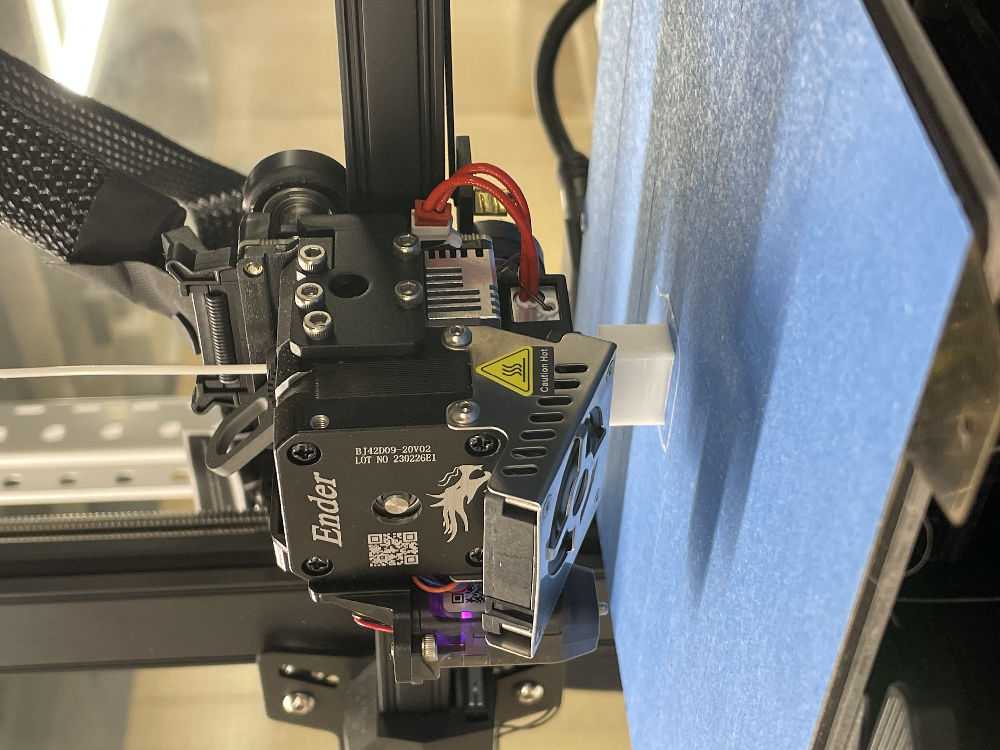

ターポリン
BACK
構想1
防水性と厚さの特性があるから、テントに作ることが適切な素材ではないか。
構想2
野菜を培いための棚
構想2にします。
大型の棚はできないが、小型で子供育ち用の野菜培い棚を作ってもいいじゃないと思った。

まずは、Fusion360でモデルを作り、3Dプリンターで棚の支えものを作っとく。

3Dプリンターの動作
もともと、この底盤のものとそれらのパーツと組み合わせて、アーチ型の支えがあり栽培ボックスを作りたかった。
しかし、3Dプリンターの時間かかり（下記の図のように、1日必要）と複雑さでプリントミスがあり
さらに今度の底盤を作っていた途中にフィラメントが無くなてしまった（下記の図のように）
それに、多くのパーツとの結合しても栽培に合う保温性が保つことができないかもしれないと思った。
以上の各原因で、改めて支えの構造を考えないとならない。その時、ちょうどファボのファボラボ憲章隣の図形を見た。
それによって、より簡易且つ丈夫な構造のアイデアが出た。これでまた続いて行きます。